Merlo san luis, bienvenidos!
Villa de Merlo San Luis : La ciudad de Merlo se encuentra ubicada en el extremo NE de la provincia de San Luis, esta alegre y colorida Villa Serrana te espera durante los 365 días del año para que pases unas vacaciones inolvidables.
Reconocida mundialmente por su benigno microclima y sus hermosos paisajes y entornos naturales, Merlo cuenta con una moderna y confortable infraestructura de alojamiento y servicios.
En Merlo San Luis encontrarás distintas opciones de alojamiento, como Cabañas y Hoteles.
Estas son algunas de las razones para que tus próximas vacaciones sean en Merlo San Luis.
Alojamiento
La oferta de alojamiento en Villa de Merlo, es amplia y variada. En Merlo encontrará Hoteles, Cabañas, Country club, Spa, Resorts, Aparts, Hosterías, Campings, etc
Actividades
Villa de Merlo ofrece un abanico de actividades y paseos. Trekking, Cabalgatas, Mountain Bike, Tirolesa, Rapel, Parapente, Kayaking, Avistaje de Aves, Cuatriciclos y más.